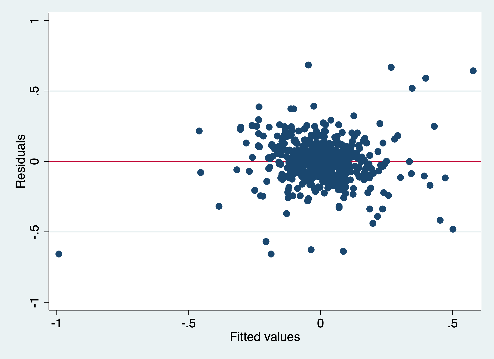

August 2, 2023
. clear . set more off
Set Working Directory
. cd "/Users/Sam/Desktop/Econ 645/Data/Wooldridge" /Users/Sam/Desktop/Econ 645/Data/Wooldridge
Sander (1992) uses the National Opinion Research Center’s General Social Survey for the veven users from 1972 to 1984. We’ll use these data to explain the total number of kids born to a women.
. use "fertil1.dta", clear
One question of interest: What happens to ferlity rates over time after controlling for observable factors? We’ll control for education, age, race, region at 16 years old, and living environment at 16.
We’ll use 1972 as our base year (which we will exclude and be captured in the intercept).
No Time Trends
. est clear
. eststo OLS: reg kids educ c.age##c.age i.black i.east i.northcen i.west i.farm i.othrural i.town i.smcity
Source │ SS df MS Number of obs = 1,129
─────────────┼────────────────────────────────── F(11, 1117) = 11.52
Model │ 314.471892 11 28.5883539 Prob > F = 0.0000
Residual │ 2771.03741 1,117 2.4807855 R-squared = 0.1019
─────────────┼────────────────────────────────── Adj R-squared = 0.0931
Total │ 3085.5093 1,128 2.73538059 Root MSE = 1.5751
─────────────┬────────────────────────────────────────────────────────────────
kids │ Coef. Std. Err. t P>|t| [95% Conf. Interval]
─────────────┼────────────────────────────────────────────────────────────────
educ │ -.1428788 .018351 -7.79 0.000 -.1788851 -.1068725
age │ .5624223 .1396257 4.03 0.000 .2884641 .8363804
│
c.age#c.age │ -.0060917 .0015793 -3.86 0.000 -.0091903 -.002993
│
1.black │ .977559 .173188 5.64 0.000 .6377485 1.31737
1.east │ .2362931 .1340365 1.76 0.078 -.0266987 .4992849
1.northcen │ .3847487 .1222117 3.15 0.002 .1449583 .6245391
1.west │ .2447027 .1686052 1.45 0.147 -.0861158 .5755212
1.farm │ -.054186 .1486156 -0.36 0.715 -.3457832 .2374112
1.othrural │ -.1670751 .1773583 -0.94 0.346 -.5150681 .1809178
1.town │ .0842369 .1257038 0.67 0.503 -.1624053 .3308792
1.smcity │ .1830768 .1620166 1.13 0.259 -.1348143 .500968
_cons │ -8.487543 3.068381 -2.77 0.006 -14.50798 -2.467104
─────────────┴────────────────────────────────────────────────────────────────
Time Trends Time Fixed Effects
. eststo Pooled_OLS: reg kids educ c.age##c.age i.black i.east i.northcen i.west i.farm i.othrural ///
> i.town i.smcity i.y74 i.y76 i.y78 i.y80 i.y82 i.y84
Source │ SS df MS Number of obs = 1,129
─────────────┼────────────────────────────────── F(17, 1111) = 9.72
Model │ 399.610888 17 23.5065228 Prob > F = 0.0000
Residual │ 2685.89841 1,111 2.41755033 R-squared = 0.1295
─────────────┼────────────────────────────────── Adj R-squared = 0.1162
Total │ 3085.5093 1,128 2.73538059 Root MSE = 1.5548
─────────────┬────────────────────────────────────────────────────────────────
kids │ Coef. Std. Err. t P>|t| [95% Conf. Interval]
─────────────┼────────────────────────────────────────────────────────────────
educ │ -.1284268 .0183486 -7.00 0.000 -.1644286 -.092425
age │ .5321346 .1383863 3.85 0.000 .2606065 .8036626
│
c.age#c.age │ -.005804 .0015643 -3.71 0.000 -.0088733 -.0027347
│
1.black │ 1.075658 .1735356 6.20 0.000 .7351631 1.416152
1.east │ .217324 .1327878 1.64 0.102 -.0432192 .4778672
1.northcen │ .363114 .1208969 3.00 0.003 .125902 .6003261
1.west │ .1976032 .1669134 1.18 0.237 -.1298978 .5251041
1.farm │ -.0525575 .14719 -0.36 0.721 -.3413592 .2362443
1.othrural │ -.1628537 .175442 -0.93 0.353 -.5070887 .1813814
1.town │ .0843532 .124531 0.68 0.498 -.1599893 .3286957
1.smcity │ .2118791 .160296 1.32 0.187 -.1026379 .5263961
1.y74 │ .2681825 .172716 1.55 0.121 -.0707039 .6070689
1.y76 │ -.0973795 .1790456 -0.54 0.587 -.448685 .2539261
1.y78 │ -.0686665 .1816837 -0.38 0.706 -.4251483 .2878154
1.y80 │ -.0713053 .1827707 -0.39 0.697 -.42992 .2873093
1.y82 │ -.5224842 .1724361 -3.03 0.003 -.8608214 -.184147
1.y84 │ -.5451661 .1745162 -3.12 0.002 -.8875846 -.2027477
_cons │ -7.742457 3.051767 -2.54 0.011 -13.73033 -1.754579
─────────────┴────────────────────────────────────────────────────────────────
Exclusion Restriction Test
. test 1.y74 1.y76 1.y78 1.y80 1.y82 1.y84
( 1) 1.y74 = 0
( 2) 1.y76 = 0
( 3) 1.y78 = 0
( 4) 1.y80 = 0
( 5) 1.y82 = 0
( 6) 1.y84 = 0
F( 6, 1111) = 5.87
Prob > F = 0.0000
We reject the null hypothesis that our combined time binaries are 0 with an F-stat (1,111 degrees of freedom) equal to 5.87.
Display
. esttab OLS Pooled_OLS, mtitles se scalars(F r2) drop(0.black 0.east 0.northcen 0.west 0.farm ///
> 0.othrural 0.town 0.smcity 0.y74 0.y76 0.y78 0.y80 0.y82 0.y84)
────────────────────────────────────────────
(1) (2)
OLS Pooled_OLS
────────────────────────────────────────────
educ -0.143*** -0.128***
(0.0184) (0.0183)
age 0.562*** 0.532***
(0.140) (0.138)
c.age#c.age -0.00609*** -0.00580***
(0.00158) (0.00156)
1.black 0.978*** 1.076***
(0.173) (0.174)
1.east 0.236 0.217
(0.134) (0.133)
1.northcen 0.385** 0.363**
(0.122) (0.121)
1.west 0.245 0.198
(0.169) (0.167)
1.farm -0.0542 -0.0526
(0.149) (0.147)
1.othrural -0.167 -0.163
(0.177) (0.175)
1.town 0.0842 0.0844
(0.126) (0.125)
1.smcity 0.183 0.212
(0.162) (0.160)
1.y74 0.268
(0.173)
1.y76 -0.0974
(0.179)
1.y78 -0.0687
(0.182)
1.y80 -0.0713
(0.183)
1.y82 -0.522**
(0.172)
1.y84 -0.545**
(0.175)
_cons -8.488** -7.742*
(3.068) (3.052)
────────────────────────────────────────────
N 1129 1129
F 11.52 9.723
r2 0.102 0.130
────────────────────────────────────────────
Standard errors in parentheses
* p<0.05, ** p<0.01, *** p<0.001
We can see most our time coefficient are not statistically significant but we do reject the null hypothesis that they are all equal to 0. If we compare 1982 and 1984 to 1972, women estimated to have about 0.52 fewer and 0.55 fewer children, respectively. This means that in 1982 100 women are expected to have 52 fewer children than 100 women in 1972.
. estat hettest
Breusch-Pagan / Cook-Weisberg test for heteroskedasticity
Ho: Constant variance
Variables: fitted values of kids
chi2(1) = 26.28
Prob > chi2 = 0.0000
Note that we reject the null hypothesis of homoskedasticity with a Breusch-Pagan Test, so we should use our heteroskedastic-robust standard errors
. est clear
. eststo Without_Robust: reg kids educ c.age##c.age i.black i.east i.northcen i.west i.farm i.othrural ///
> i.town i.smcity i.y74 i.y76 i.y78 i.y80 i.y82 i.y84
Source │ SS df MS Number of obs = 1,129
─────────────┼────────────────────────────────── F(17, 1111) = 9.72
Model │ 399.610888 17 23.5065228 Prob > F = 0.0000
Residual │ 2685.89841 1,111 2.41755033 R-squared = 0.1295
─────────────┼────────────────────────────────── Adj R-squared = 0.1162
Total │ 3085.5093 1,128 2.73538059 Root MSE = 1.5548
─────────────┬────────────────────────────────────────────────────────────────
kids │ Coef. Std. Err. t P>|t| [95% Conf. Interval]
─────────────┼────────────────────────────────────────────────────────────────
educ │ -.1284268 .0183486 -7.00 0.000 -.1644286 -.092425
age │ .5321346 .1383863 3.85 0.000 .2606065 .8036626
│
c.age#c.age │ -.005804 .0015643 -3.71 0.000 -.0088733 -.0027347
│
1.black │ 1.075658 .1735356 6.20 0.000 .7351631 1.416152
1.east │ .217324 .1327878 1.64 0.102 -.0432192 .4778672
1.northcen │ .363114 .1208969 3.00 0.003 .125902 .6003261
1.west │ .1976032 .1669134 1.18 0.237 -.1298978 .5251041
1.farm │ -.0525575 .14719 -0.36 0.721 -.3413592 .2362443
1.othrural │ -.1628537 .175442 -0.93 0.353 -.5070887 .1813814
1.town │ .0843532 .124531 0.68 0.498 -.1599893 .3286957
1.smcity │ .2118791 .160296 1.32 0.187 -.1026379 .5263961
1.y74 │ .2681825 .172716 1.55 0.121 -.0707039 .6070689
1.y76 │ -.0973795 .1790456 -0.54 0.587 -.448685 .2539261
1.y78 │ -.0686665 .1816837 -0.38 0.706 -.4251483 .2878154
1.y80 │ -.0713053 .1827707 -0.39 0.697 -.42992 .2873093
1.y82 │ -.5224842 .1724361 -3.03 0.003 -.8608214 -.184147
1.y84 │ -.5451661 .1745162 -3.12 0.002 -.8875846 -.2027477
_cons │ -7.742457 3.051767 -2.54 0.011 -13.73033 -1.754579
─────────────┴────────────────────────────────────────────────────────────────
. eststo With_Robust: reg kids educ c.age##c.age i.black i.east i.northcen i.west i.farm i.othrural ///
> i.town i.smcity i.y74 i.y76 i.y78 i.y80 i.y82 i.y84, robust
Linear regression Number of obs = 1,129
F(17, 1111) = 10.19
Prob > F = 0.0000
R-squared = 0.1295
Root MSE = 1.5548
─────────────┬────────────────────────────────────────────────────────────────
│ Robust
kids │ Coef. Std. Err. t P>|t| [95% Conf. Interval]
─────────────┼────────────────────────────────────────────────────────────────
educ │ -.1284268 .021146 -6.07 0.000 -.1699175 -.0869362
age │ .5321346 .1389371 3.83 0.000 .2595258 .8047433
│
c.age#c.age │ -.005804 .0015791 -3.68 0.000 -.0089024 -.0027056
│
1.black │ 1.075658 .2013188 5.34 0.000 .6806496 1.470666
1.east │ .217324 .127466 1.70 0.088 -.0327773 .4674252
1.northcen │ .363114 .1167013 3.11 0.002 .1341342 .5920939
1.west │ .1976032 .1626813 1.21 0.225 -.121594 .5168003
1.farm │ -.0525575 .1460837 -0.36 0.719 -.3391886 .2340736
1.othrural │ -.1628537 .1808546 -0.90 0.368 -.5177087 .1920014
1.town │ .0843532 .1284759 0.66 0.512 -.1677295 .3364359
1.smcity │ .2118791 .1539645 1.38 0.169 -.0902149 .5139731
1.y74 │ .2681825 .1875121 1.43 0.153 -.0997353 .6361003
1.y76 │ -.0973795 .1999339 -0.49 0.626 -.4896701 .2949112
1.y78 │ -.0686665 .1977154 -0.35 0.728 -.4566042 .3192713
1.y80 │ -.0713053 .1936553 -0.37 0.713 -.4512767 .3086661
1.y82 │ -.5224842 .1879305 -2.78 0.006 -.8912228 -.1537456
1.y84 │ -.5451661 .1859289 -2.93 0.003 -.9099776 -.1803547
_cons │ -7.742457 3.070656 -2.52 0.012 -13.7674 -1.717518
─────────────┴────────────────────────────────────────────────────────────────
. esttab Without_Robust With_Robust, mtitles se scalars(F r2) drop(0.black 0.east 0.northcen 0.west 0.farm ///
> 0.othrural 0.town 0.smcity 0.y74 0.y76 0.y78 0.y80 0.y82 0.y84)
────────────────────────────────────────────
(1) (2)
Without_Ro~t With_Robust
────────────────────────────────────────────
educ -0.128*** -0.128***
(0.0183) (0.0211)
age 0.532*** 0.532***
(0.138) (0.139)
c.age#c.age -0.00580*** -0.00580***
(0.00156) (0.00158)
1.black 1.076*** 1.076***
(0.174) (0.201)
1.east 0.217 0.217
(0.133) (0.127)
1.northcen 0.363** 0.363**
(0.121) (0.117)
1.west 0.198 0.198
(0.167) (0.163)
1.farm -0.0526 -0.0526
(0.147) (0.146)
1.othrural -0.163 -0.163
(0.175) (0.181)
1.town 0.0844 0.0844
(0.125) (0.128)
1.smcity 0.212 0.212
(0.160) (0.154)
1.y74 0.268 0.268
(0.173) (0.188)
1.y76 -0.0974 -0.0974
(0.179) (0.200)
1.y78 -0.0687 -0.0687
(0.182) (0.198)
1.y80 -0.0713 -0.0713
(0.183) (0.194)
1.y82 -0.522** -0.522**
(0.172) (0.188)
1.y84 -0.545** -0.545**
(0.175) (0.186)
_cons -7.742* -7.742*
(3.052) (3.071)
────────────────────────────────────────────
N 1129 1129
F 9.723 10.19
r2 0.130 0.130
────────────────────────────────────────────
Standard errors in parentheses
* p<0.05, ** p<0.01, *** p<0.001
Question: do you think the number of kids is distributed normally?
Stata interactions: i.var1##i.var2, i.var1##c.var3, c.var3##c.var4
We can estimate to see how the wage gap and returns to schooling have compared for women. We pool data from 1978 and 1985 from the Current Population Survey.
. use "cps78_85.dta", clear
What we will do to estimate the wage gap and the returns to education between 1978 and 1985. We can do this by interacting our binary variable y85 with our continuous variable of education. Our coefficient on edu will be the returns to education in 1978 and the return to education in 1985 will be captured in the coefficient for edu#1.y85 plus the coefficient for edu in 1978. The coefficient for edu#1.y85 will be relative to the coefficient on edu, so We can add the two coefficients to find the returns to education in 1985.
We also interact our binary variable y85 with another binary variable female to see the wage gap in 1978 and 1985. 1.female will be the wage gap in 1978 and 1.female#1.y85 plus the 1.female will be our wage gap for females in 1985.
Wages will have changed between 1978 and 1985 due to inflation, since wages in the CPS are in nominal dollars. We can deflate our wages with a price deflator, or we can use natural log of wages with time binaries to capture inflation that is associated with the year binaries.
Natural Log and accounting for inflation with time variables. Let’s say our deflator for 1985 is 1.65, so we need to divide wages by the deflator to get real wages in 1978 dollars. But if we take the natural log transformed wages using real or nominal wages does not matter since the inflation factor will be absorbed in the time binary y1985:
ln(wage_i/P85)=ln(wages_i)-ln(p85).
While wages may differ across individuals in 1985, all individuals in 1985 are affected by the secular trend of inflation relevant to 1985. (Note: if the price trends varied by region, then we would need to account for this since prices would not be a secular trend affecting all people).
We need both ln(wages) and time binaries, otherwise our estimates would be biased. Note: that this remains true whether the nominal value is in the dependent or independent variables as long as it is natural log transformed and has *time binaries.
. reg lwage i.y85##c.edu c.exper##c.exper i.union i.female##i.y85
Source │ SS df MS Number of obs = 1,084
─────────────┼────────────────────────────────── F(8, 1075) = 99.80
Model │ 135.992074 8 16.9990092 Prob > F = 0.0000
Residual │ 183.099094 1,075 .170324738 R-squared = 0.4262
─────────────┼────────────────────────────────── Adj R-squared = 0.4219
Total │ 319.091167 1,083 .29463635 Root MSE = .4127
────────────────┬────────────────────────────────────────────────────────────────
lwage │ Coef. Std. Err. t P>|t| [95% Conf. Interval]
────────────────┼────────────────────────────────────────────────────────────────
1.y85 │ .1178062 .1237817 0.95 0.341 -.125075 .3606874
educ │ .0747209 .0066764 11.19 0.000 .0616206 .0878212
│
y85#c.educ │
1 │ .0184605 .0093542 1.97 0.049 .000106 .036815
│
exper │ .0295843 .0035673 8.29 0.000 .0225846 .036584
│
c.exper#c.exper │ -.0003994 .0000775 -5.15 0.000 -.0005516 -.0002473
│
1.union │ .2021319 .0302945 6.67 0.000 .1426888 .2615749
1.female │ -.3167086 .0366215 -8.65 0.000 -.3885663 -.244851
│
female#y85 │
1 1 │ .085052 .051309 1.66 0.098 -.0156251 .185729
│
_cons │ .4589329 .0934485 4.91 0.000 .2755707 .642295
────────────────┴────────────────────────────────────────────────────────────────
Our results Wage gap in 1978 is exp(-.317)-1100 = -27.2% Wage gap in 1985 is exp(-.317+.085)-1100 = -20.7%
. display (exp(-.317)-1)*100 -27.166924 . display (exp(-.317+0.085)-1)*100 -20.705388
Difference in returns to education
. display (exp(0.0747)-1)*100 7.7560834 . display (exp(0.0747+0.0185)-1)*100 9.768125
Declines in wage gap since 1978
. display (exp(0.085)-1)*100 8.8717067
Increases in returns to education since 1978
. display (exp(0.0185)-1)*100 1.8672185
Chow Test/F-Test for structural changes across time (nested-model) Test whether or not to include time binaries
. test 1.y85 0.y85 1.y85#edu 1.y85#1.female
( 1) 1.y85 = 0
( 2) 0b.y85 = 0
( 3) 1.y85#c.educ = 0
( 4) 1.female#1.y85 = 0
Constraint 2 dropped
F( 3, 1075) = 80.26
Prob > F = 0.0000
Test slopes
. test 1.y85#edu 1.y85#1.female
( 1) 1.y85#c.educ = 0
( 2) 1.female#1.y85 = 0
F( 2, 1075) = 3.43
Prob > F = 0.0326
Test intercepts
. test 1.y85 0.y85
( 1) 1.y85 = 0
( 2) 0b.y85 = 0
Constraint 2 dropped
F( 1, 1075) = 0.91
Prob > F = 0.3415
Should we keep our time binaries? Our F-tests show that we should and we’ll need them for to account for inflation.
I think this is a good example of a poorly set up panel data. We’ll use the file called slp75_81.dta to took at a two year panel data from Biddle and Hamermesh (1990) to estimate the tradeoff between sleeping and working. We have data for 239 people between 1975 and 1981 for the same person in both periods.
. use "slp75_81.dta", clear
We’ll get to reshape in Mitchell soon, but here is a preview. We will reshape the data so that each cross-sectional unit of observation has 2 rows: one for 1975 and one for 1985.
Reshape
. gen id=_n
. gen age81=age75+6
. reshape long age educ gdhlth marr slpnap totwrk yngkid, i(id) j(year)
(note: j = 75 81)
Data wide -> long
─────────────────────────────────────────────────────────────────────────────
Number of obs. 239 -> 478
Number of variables 22 -> 16
j variable (2 values) -> year
xij variables:
age75 age81 -> age
educ75 educ81 -> educ
gdhlth75 gdhlth81 -> gdhlth
marr75 marr81 -> marr
slpnap75 slpnap81 -> slpnap
totwrk75 totwrk81 -> totwrk
yngkid75 yngkid81 -> yngkid
─────────────────────────────────────────────────────────────────────────────
. replace year=year+1900
variable year was byte now int
(478 real changes made)
We’ll generate our time binaries Gen time binaries
. gen d75 = . (478 missing values generated) . replace d75=0 if year==1981 (239 real changes made) . replace d75=1 if year==1975 (239 real changes made)
. gen d81=. (478 missing values generated) . replace d81=0 if year==1975 (239 real changes made) . replace d81=1 if year==1981 (239 real changes made)
And we’ll want to check that we don’t have any overlapping periods Check
. tab year d75
│ d75
year │ 0 1 │ Total
───────────┼──────────────────────┼──────────
1975 │ 0 239 │ 239
1981 │ 239 0 │ 239
───────────┼──────────────────────┼──────────
Total │ 239 239 │ 478
. tab year d81
│ d81
year │ 0 1 │ Total
───────────┼──────────────────────┼──────────
1975 │ 239 0 │ 239
1981 │ 0 239 │ 239
───────────┼──────────────────────┼──────────
Total │ 239 239 │ 478
. tab d81 d75
│ d75
d81 │ 0 1 │ Total
───────────┼──────────────────────┼──────────
0 │ 0 239 │ 239
1 │ 239 0 │ 239
───────────┼──────────────────────┼──────────
Total │ 239 239 │ 478
Now we can work with the panel Let xtset know that there is a 6 year gap in the data If not, it will try to take a 1 year change and 1976 does not exist
. xtset id year, delta(6)
panel variable: id (strongly balanced)
time variable: year, 1975 to 1981
delta: 6 units
slpnap - total minutes of sleep per week totwrk - total hours of work per year educ - total years of education marr - married dummy variable yngkid - presence of a young child dummy variable gdhlth - “good health” dummy variable
After we set up our panel, we can control for the unobserved cross-sectional unit effect a_i, or unobserved individual effect that do not vary over time. This is all characteristics of the cross-sectional unit of observation that is constant over time or time-invariant.
We are interested in the tradeoff between work and sleep. Our dependent variable of interest is total minutes sleeping per week. Our explanatory variable of interest is the total working hours during the year.
. histogram totwrk (bin=21, start=0, width=228.80952) . graph export "/Users/Sam/Desktop/Econ 645/Stata/totwrk.png", replace (file /Users/Sam/Desktop/Econ 645/Stata/totwrk.png written in PNG format)
. histogram slpnap (bin=21, start=1240, width=231.90476) . graph export "/Users/Sam/Desktop/Econ 645/Stata/slpnap.png", replace (file /Users/Sam/Desktop/Econ 645/Stata/slpnap.png written in PNG format)
When we run OLS, we do not control for unobserved individual time-invariant effects Pooled OLS
. est clear
. eststo OLS: reg slpnap i.d81 totwrk educ marr yngkid gdhlth
Source │ SS df MS Number of obs = 478
─────────────┼────────────────────────────────── F(6, 471) = 8.50
Model │ 12812772.5 6 2135462.09 Prob > F = 0.0000
Residual │ 118370944 471 251318.353 R-squared = 0.0977
─────────────┼────────────────────────────────── Adj R-squared = 0.0862
Total │ 131183717 477 275018.274 Root MSE = 501.32
─────────────┬────────────────────────────────────────────────────────────────
slpnap │ Coef. Std. Err. t P>|t| [95% Conf. Interval]
─────────────┼────────────────────────────────────────────────────────────────
1.d81 │ -77.02965 47.96519 -1.61 0.109 -171.2819 17.22259
totwrk │ -.1500954 .0244002 -6.15 0.000 -.1980421 -.1021487
educ │ -20.25655 8.000179 -2.53 0.012 -35.97701 -4.536091
marr │ -42.19389 53.07869 -0.79 0.427 -146.4942 62.10645
yngkid │ 74.2579 77.32582 0.96 0.337 -77.68838 226.2042
gdhlth │ 29.03733 59.57889 0.49 0.626 -88.03599 146.1107
_cons │ 3958.756 121.7663 32.51 0.000 3719.483 4198.028
─────────────┴────────────────────────────────────────────────────────────────
FD Model
. eststo FD: reg d.slpnap d.totwrk d.educ d.marr d.yngkid d.gdhlth
Source │ SS df MS Number of obs = 239
─────────────┼────────────────────────────────── F(5, 233) = 8.19
Model │ 14674698.2 5 2934939.64 Prob > F = 0.0000
Residual │ 83482611.7 233 358294.471 R-squared = 0.1495
─────────────┼────────────────────────────────── Adj R-squared = 0.1313
Total │ 98157309.9 238 412425.672 Root MSE = 598.58
─────────────┬────────────────────────────────────────────────────────────────
D.slpnap │ Coef. Std. Err. t P>|t| [95% Conf. Interval]
─────────────┼────────────────────────────────────────────────────────────────
totwrk │
D1. │ -.2266694 .036054 -6.29 0.000 -.2977029 -.1556359
│
educ │
D1. │ -.0244717 48.75938 -0.00 1.000 -96.09008 96.04113
│
marr │
D1. │ 104.2139 92.85536 1.12 0.263 -78.72946 287.1574
│
yngkid │
D1. │ 94.6654 87.65252 1.08 0.281 -78.02739 267.3582
│
gdhlth │
D1. │ 87.57785 76.59913 1.14 0.254 -63.33758 238.4933
│
_cons │ -92.63404 45.8659 -2.02 0.045 -182.9989 -2.269152
─────────────┴────────────────────────────────────────────────────────────────
Similar except time dummy and base intercepts look at the difference between educ in Pooled and FE models There is likely a confounder between ability sleep and education
. esttab OLS FD, mtitles se scalars(F r2) drop(0.d81)
────────────────────────────────────────────
(1) (2)
OLS FD
────────────────────────────────────────────
1.d81 -77.03
(47.97)
totwrk -0.150***
(0.0244)
educ -20.26*
(8.000)
marr -42.19
(53.08)
yngkid 74.26
(77.33)
gdhlth 29.04
(59.58)
D.totwrk -0.227***
(0.0361)
D.educ -0.0245
(48.76)
D.marr 104.2
(92.86)
D.yngkid 94.67
(87.65)
D.gdhlth 87.58
(76.60)
_cons 3958.8*** -92.63*
(121.8) (45.87)
────────────────────────────────────────────
N 478 239
F 8.497 8.191
r2 0.0977 0.150
────────────────────────────────────────────
Standard errors in parentheses
* p<0.05, ** p<0.01, *** p<0.001
Let’s look at elasticities
. gen lnslpnap=ln(slpnap) . gen lntotwrk=ln(totwrk) (31 missing values generated) . gen lneduc=ln(educ)
FD Model
. reg d.lnslpnap d.lntotwrk d.lneduc d.marr d.yngkid d.gdhlth
Source │ SS df MS Number of obs = 214
─────────────┼────────────────────────────────── F(5, 208) = 4.17
Model │ .805249181 5 .161049836 Prob > F = 0.0012
Residual │ 8.03583239 208 .03863381 R-squared = 0.0911
─────────────┼────────────────────────────────── Adj R-squared = 0.0692
Total │ 8.84108157 213 .041507425 Root MSE = .19655
─────────────┬────────────────────────────────────────────────────────────────
D.lnslpnap │ Coef. Std. Err. t P>|t| [95% Conf. Interval]
─────────────┼────────────────────────────────────────────────────────────────
lntotwrk │
D1. │ -.0848256 .0206499 -4.11 0.000 -.1255354 -.0441158
│
lneduc │
D1. │ -.0289507 .2628724 -0.11 0.912 -.5471864 .489285
│
marr │
D1. │ -.0038529 .0323002 -0.12 0.905 -.0675306 .0598247
│
yngkid │
D1. │ .0056761 .0290466 0.20 0.845 -.0515874 .0629397
│
gdhlth │
D1. │ .048008 .0266772 1.80 0.073 -.0045843 .1006004
│
_cons │ -.0204204 .0155593 -1.31 0.191 -.0510947 .0102538
─────────────┴────────────────────────────────────────────────────────────────
We will get into time series later in the course, but we will have a preview. With panel data, we are able to see the same observation over time. Given this We can see if lagged values affect current values for the cross-sectional unit of observation.
Eide(1994) wants to assess if prior clear-up rates for crime have a relationship with crime rates in the current time period. The dependent variable of interest is the current period crime rate. The variable of interest is the clear-up percentage which is the rate of crimes that have lead to conviction.
. use crime3.dta, clear
We will use a log-log model and use a first-difference
. reg clcrime cclrprc1 cclrprc2
Source │ SS df MS Number of obs = 53
─────────────┼────────────────────────────────── F(2, 50) = 5.99
Model │ 1.42294697 2 .711473484 Prob > F = 0.0046
Residual │ 5.93723904 50 .118744781 R-squared = 0.1933
─────────────┼────────────────────────────────── Adj R-squared = 0.1611
Total │ 7.36018601 52 .141542039 Root MSE = .34459
─────────────┬────────────────────────────────────────────────────────────────
clcrime │ Coef. Std. Err. t P>|t| [95% Conf. Interval]
─────────────┼────────────────────────────────────────────────────────────────
cclrprc1 │ -.0040475 .0047199 -0.86 0.395 -.0135276 .0054326
cclrprc2 │ -.0131966 .0051946 -2.54 0.014 -.0236302 -.0027629
_cons │ .0856556 .0637825 1.34 0.185 -.0424553 .2137665
─────────────┴────────────────────────────────────────────────────────────────
Our model tells us that 1 percent increase in getting crimes to conviction leads to a reduction in the current period crime rate of about 1.32 percent. Assuming this model is specified well, crime rates are sensitive to clear-up rates from the prior 2 years.
We should test for heteroskedasticity and serial correlation when running our First-Difference Estimator.
Serial correlation means that the differences in the idiosyncractic errors between time periods are correlated, which is a violation of our assumption that there is no serial correlation for our first-difference estimator
We’ll use data from Papke (1994) who studied the effect of Indiana’s enterprise zone program on unemployment claims. Do enterprise zones increase employment and reduce unemployment claims?
She analyzes 22 cities in Indiana from 1980 to 1988, since 6 enterprise zones were established in 1984. Twelve cities did not receive the enterprise zones, while 10 cities did get enterprise zones.
. use "ezunem.dta", clear
We’ll use a simple analysis that the change in natural log of unemployment claims is a function of time period binaries, change in enterprise zones, and the idiosyncractic error.
One way to do it is to use the data already created. Pooled OLS
. reg luclms i.d82 i.d83 i.d84 i.d85 i.d86 i.d87 i.d88 cez
Source │ SS df MS Number of obs = 176
─────────────┼────────────────────────────────── F(8, 167) = 10.39
Model │ 29.2551235 8 3.65689043 Prob > F = 0.0000
Residual │ 58.7753327 167 .3519481 R-squared = 0.3323
─────────────┼────────────────────────────────── Adj R-squared = 0.3003
Total │ 88.0304561 175 .503031178 Root MSE = .59325
─────────────┬────────────────────────────────────────────────────────────────
luclms │ Coef. Std. Err. t P>|t| [95% Conf. Interval]
─────────────┼────────────────────────────────────────────────────────────────
1.d82 │ .4571276 .1788722 2.56 0.011 .1039853 .8102699
1.d83 │ .1023765 .1788722 0.57 0.568 -.2507658 .4555188
1.d84 │ -.2821805 .1882109 -1.50 0.136 -.6537598 .0893988
1.d85 │ -.3150721 .1830816 -1.72 0.087 -.6765248 .0463805
1.d86 │ -.3470941 .1788722 -1.94 0.054 -.7002364 .0060481
1.d87 │ -.614778 .1788722 -3.44 0.001 -.9679202 -.2616357
1.d88 │ -.9534624 .1788722 -5.33 0.000 -1.306605 -.6003201
cez │ -.0139924 .2146822 -0.07 0.948 -.4378332 .4098484
_cons │ 11.37276 .1264818 89.92 0.000 11.12305 11.62247
─────────────┴────────────────────────────────────────────────────────────────
Let’s say we didn’t have the data already created. What we’ll need to do is to set the panel data with xtset unit timeperiod Set the Panel Data
. xtset city year
panel variable: city (strongly balanced)
time variable: year, 1980 to 1988
delta: 1 unit
We can use the d. operator to use a first difference First Difference
. reg d.luclms i.d82 i.d83 i.d84 i.d85 i.d86 i.d87 i.d88 d.ez
Source │ SS df MS Number of obs = 176
─────────────┼────────────────────────────────── F(8, 167) = 34.50
Model │ 12.8826331 8 1.61032914 Prob > F = 0.0000
Residual │ 7.79583815 167 .046681666 R-squared = 0.6230
─────────────┼────────────────────────────────── Adj R-squared = 0.6049
Total │ 20.6784713 175 .118162693 Root MSE = .21606
─────────────┬────────────────────────────────────────────────────────────────
D.luclms │ Coef. Std. Err. t P>|t| [95% Conf. Interval]
─────────────┼────────────────────────────────────────────────────────────────
1.d82 │ .7787595 .0651444 11.95 0.000 .6501469 .9073721
1.d83 │ -.0331192 .0651444 -0.51 0.612 -.1617318 .0954934
1.d84 │ -.0171382 .0685455 -0.25 0.803 -.1524655 .1181891
1.d85 │ .323081 .0666774 4.85 0.000 .1914417 .4547202
1.d86 │ .292154 .0651444 4.48 0.000 .1635413 .4207666
1.d87 │ .0539481 .0651444 0.83 0.409 -.0746645 .1825607
1.d88 │ -.0170526 .0651444 -0.26 0.794 -.1456652 .1115601
│
ez │
D1. │ -.1818775 .0781862 -2.33 0.021 -.3362382 -.0275169
│
_cons │ -.3216319 .046064 -6.98 0.000 -.4125748 -.2306891
─────────────┴────────────────────────────────────────────────────────────────
Test for Heteroskedasticity Bruesch-Pagan/Cameron-Trivedi Test
. estat imtest
Cameron & Trivedi's decomposition of IM-test
─────────────────────┬─────────────────────────────
Source │ chi2 df p
─────────────────────┼─────────────────────────────
Heteroskedasticity │ 12.85 9 0.1697
Skewness │ 13.04 8 0.1104
Kurtosis │ 0.11 1 0.7414
─────────────────────┼─────────────────────────────
Total │ 26.00 18 0.0998
─────────────────────┴─────────────────────────────
White Test
. estat imtest, white
White's test for Ho: homoskedasticity
against Ha: unrestricted heteroskedasticity
chi2(9) = 12.85
Prob > chi2 = 0.1697
Cameron & Trivedi's decomposition of IM-test
─────────────────────┬─────────────────────────────
Source │ chi2 df p
─────────────────────┼─────────────────────────────
Heteroskedasticity │ 12.85 9 0.1697
Skewness │ 13.04 8 0.1104
Kurtosis │ 0.11 1 0.7414
─────────────────────┼─────────────────────────────
Total │ 26.00 18 0.0998
─────────────────────┴─────────────────────────────
We fail to reject the null hypothesis of homoskedastic standard errors.
Test for autocorrelation We can use the command xtserial to test for serial correlation, since we already set up our panel above.
. help xtserial
. xtserial luclms d83 d84 d85 d86 d87 d88 cez, output
Linear regression Number of obs = 154
F(7, 21) = 102.85
Prob > F = 0.0000
R-squared = 0.4711
Root MSE = .28063
(Std. Err. adjusted for 22 clusters in city)
─────────────┬────────────────────────────────────────────────────────────────
│ Robust
D.luclms │ Coef. Std. Err. t P>|t| [95% Conf. Interval]
─────────────┼────────────────────────────────────────────────────────────────
d83 │
D1. │ -.3547511 .0410541 -8.64 0.000 -.4401277 -.2693745
│
d84 │
D1. │ -.7240107 .0816269 -8.87 0.000 -.893763 -.5542583
│
d85 │
D1. │ -.7620015 .0540757 -14.09 0.000 -.8744581 -.6495448
│
d86 │
D1. │ -.8042218 .0490039 -16.41 0.000 -.906131 -.7023126
│
d87 │
D1. │ -1.071906 .0496977 -21.57 0.000 -1.175258 -.9685535
│
d88 │
D1. │ -1.41059 .065833 -21.43 0.000 -1.547497 -1.273683
│
cez │
D1. │ -.070083 .0650804 -1.08 0.294 -.205425 .065259
─────────────┴────────────────────────────────────────────────────────────────
Wooldridge test for autocorrelation in panel data
H0: no first-order autocorrelation
F( 1, 21) = 120.981
Prob > F = 0.0000
We reject the null hypothesis that the differences in idiosyncratic errors is 0.
What can we do for this serial correlation? We can cluster our standard errors to account for the serial correlation within units.
Robust for serial correlation within unit of analysis clusters
. reg d.luclms i.d82 i.d83 i.d84 i.d85 i.d86 i.d87 i.d88 d.cez, robust cluster(city)
note: 1.d88 omitted because of collinearity
Linear regression Number of obs = 154
F(7, 21) = 41.20
Prob > F = 0.0000
R-squared = 0.6333
Root MSE = .21865
(Std. Err. adjusted for 22 clusters in city)
─────────────┬────────────────────────────────────────────────────────────────
│ Robust
D.luclms │ Coef. Std. Err. t P>|t| [95% Conf. Interval]
─────────────┼────────────────────────────────────────────────────────────────
1.d82 │ .7958121 .0577076 13.79 0.000 .6758025 .9158217
1.d83 │ -.0160666 .0565946 -0.28 0.779 -.1337615 .1016282
1.d84 │ -.0305751 .0742049 -0.41 0.684 -.1848926 .1237424
1.d85 │ .3006937 .0568959 5.28 0.000 .1823723 .4190151
1.d86 │ .2964642 .0786548 3.77 0.001 .1328926 .4600357
1.d87 │ .0710007 .0462206 1.54 0.139 -.0251204 .1671217
1.d88 │ 0 (omitted)
│
cez │
D1. │ -.070083 .0653029 -1.07 0.295 -.2058877 .0657217
│
_cons │ -.3386845 .0359416 -9.42 0.000 -.4134292 -.2639397
─────────────┴────────────────────────────────────────────────────────────────
Once we account for the serial correlation in the idiosyncratic error, our coefficient on the change in enterprise zone becomes statistically insignificant.
Testing for serial correlation, and Clustering your standard error at the treatment level is an important test and step with FD estimators.
When we get to Fixed Effects (Within) estimator, the assumption is slightly different. For First-Difference Estimator, the DIFFERENCE in idiosyncratic errors cannot be correlated, but for Fixed-Effects (Within) Estimator the assumption states that only the idiosyncratic errors cannot be correlated.
Cornwell and Trumbull (1994) analyzed data on 90 counties in North Carolina from 1981 to 1987 to using panel data to account for time-invariant effects. Their cross-sectional unit of observation is the county (not individuals within a county). They want to know what the is the effect of police per capita on crime rates.
For our model the dependent variable is the change in the natural log of crimes per person (lcrimrte). They are interested in estimating the sensitivity of police per capita (polpc) on crime rate, so they use the difference in natural log of police per capita. This will get you elasticities, which provide useful interpretations of percentage increases.
They also control for the difference in natural log of probability of arrest (prbarr), the probability of conviction (prbconv), the probability of serving time in prison given a conviction (prbpris), and the average sentence length.
. use "crime4.dta", clear
Pooled OLS
. reg lcrmrte i.d82 i.d83 i.d84 i.d85 i.d86 i.d87 lprbarr lprbconv lprbpris lavgsen lpolpc
Source │ SS df MS Number of obs = 630
─────────────┼────────────────────────────────── F(11, 618) = 74.49
Model │ 117.644669 11 10.6949699 Prob > F = 0.0000
Residual │ 88.735673 618 .143585231 R-squared = 0.5700
─────────────┼────────────────────────────────── Adj R-squared = 0.5624
Total │ 206.380342 629 .328108652 Root MSE = .37893
─────────────┬────────────────────────────────────────────────────────────────
lcrmrte │ Coef. Std. Err. t P>|t| [95% Conf. Interval]
─────────────┼────────────────────────────────────────────────────────────────
1.d82 │ .0051371 .057931 0.09 0.929 -.1086284 .1189026
1.d83 │ -.043503 .0576243 -0.75 0.451 -.1566662 .0696601
1.d84 │ -.1087542 .057923 -1.88 0.061 -.222504 .0049957
1.d85 │ -.0780454 .0583244 -1.34 0.181 -.1925835 .0364928
1.d86 │ -.0420791 .0578218 -0.73 0.467 -.15563 .0714719
1.d87 │ -.0270426 .056899 -0.48 0.635 -.1387815 .0846963
lprbarr │ -.7195033 .0367657 -19.57 0.000 -.7917042 -.6473024
lprbconv │ -.5456589 .0263683 -20.69 0.000 -.5974413 -.4938765
lprbpris │ .2475521 .0672268 3.68 0.000 .1155314 .3795728
lavgsen │ -.0867575 .0579205 -1.50 0.135 -.2005023 .0269872
lpolpc │ .3659886 .0300252 12.19 0.000 .3070248 .4249525
_cons │ -2.082293 .2516253 -8.28 0.000 -2.576438 -1.588149
─────────────┴────────────────────────────────────────────────────────────────
First Difference
. xtset county year
panel variable: county (strongly balanced)
time variable: year, 81 to 87
delta: 1 unit
With xtset, we can use the d. for our explanatory variables First-Difference
. reg d.lcrmrte i.d83 i.d84 i.d85 i.d86 i.d87 d.lprbarr d.lprbconv d.lprbpris d.lavgsen d.lpolpc
Source │ SS df MS Number of obs = 540
─────────────┼────────────────────────────────── F(10, 529) = 40.32
Model │ 9.60042828 10 .960042828 Prob > F = 0.0000
Residual │ 12.5963755 529 .023811674 R-squared = 0.4325
─────────────┼────────────────────────────────── Adj R-squared = 0.4218
Total │ 22.1968038 539 .041181454 Root MSE = .15431
─────────────┬────────────────────────────────────────────────────────────────
D.lcrmrte │ Coef. Std. Err. t P>|t| [95% Conf. Interval]
─────────────┼────────────────────────────────────────────────────────────────
1.d83 │ -.0998658 .0238953 -4.18 0.000 -.1468071 -.0529246
1.d84 │ -.0479374 .0235021 -2.04 0.042 -.0941063 -.0017686
1.d85 │ -.0046111 .0234998 -0.20 0.845 -.0507756 .0415533
1.d86 │ .0275143 .0241494 1.14 0.255 -.0199261 .0749548
1.d87 │ .0408267 .0244153 1.67 0.095 -.0071361 .0887895
│
lprbarr │
D1. │ -.3274942 .0299801 -10.92 0.000 -.3863889 -.2685994
│
lprbconv │
D1. │ -.2381066 .0182341 -13.06 0.000 -.2739268 -.2022864
│
lprbpris │
D1. │ -.1650462 .025969 -6.36 0.000 -.2160613 -.1140312
│
lavgsen │
D1. │ -.0217607 .0220909 -0.99 0.325 -.0651574 .021636
│
lpolpc │
D1. │ .3984264 .026882 14.82 0.000 .3456177 .451235
│
_cons │ .0077134 .0170579 0.45 0.651 -.0257961 .0412229
─────────────┴────────────────────────────────────────────────────────────────
So our model is estimating that a 1% increase in police per capita increases the crime rate by about 0.4%. We would expect that increases in police per capita would reduce crime rates. This is likely shows that there are problems in our model.
What is happening? Likely simultaneity bias is occurring. Areas with high crime rates have more police per capita, which more police per capita is associated with higher crime rates. It’s a circular/endogenous reference, so we will need an valid instrument to deal with this simultaneity bias/endogeneity.
We can test for heteroskedasticity and serial correlation, but this only affects our standard errors, not our coefficients.
Test for autocorrelation with one lag AR(1) We can see that serial correlation is a problem, which means we should cluster our standard errors at the county level.
. predict r, residual
(90 missing values generated)
. gen lag_r =l.r
(180 missing values generated)
. reg r lag_r i.d83 i.d84 i.d85 i.d86 i.d87 d.lprbarr d.lprbconv d.lprbpris d.lavgsen d.lpolpc
note: 1.d87 omitted because of collinearity
Source │ SS df MS Number of obs = 450
─────────────┼────────────────────────────────── F(10, 439) = 2.35
Model │ .564663971 10 .056466397 Prob > F = 0.0102
Residual │ 10.528838 439 .023983686 R-squared = 0.0509
─────────────┼────────────────────────────────── Adj R-squared = 0.0293
Total │ 11.093502 449 .024707131 Root MSE = .15487
─────────────┬────────────────────────────────────────────────────────────────
r │ Coef. Std. Err. t P>|t| [95% Conf. Interval]
─────────────┼────────────────────────────────────────────────────────────────
lag_r │ -.2332117 .0488802 -4.77 0.000 -.32928 -.1371435
1.d83 │ -.0012379 .0234019 -0.05 0.958 -.0472317 .0447558
1.d84 │ -.0016543 .0236303 -0.07 0.944 -.0480968 .0447883
1.d85 │ -.0006044 .0236114 -0.03 0.980 -.0470098 .0458009
1.d86 │ .0008841 .0233216 0.04 0.970 -.0449517 .0467199
1.d87 │ 0 (omitted)
│
lprbarr │
D1. │ .0082875 .0330698 0.25 0.802 -.0567074 .0732823
│
lprbconv │
D1. │ -.0036161 .0200155 -0.18 0.857 -.0429542 .0357221
│
lprbpris │
D1. │ .0017131 .027855 0.06 0.951 -.0530326 .0564588
│
lavgsen │
D1. │ -.0125831 .0245006 -0.51 0.608 -.0607362 .03557
│
lpolpc │
D1. │ .0214883 .0282688 0.76 0.448 -.0340706 .0770473
│
_cons │ .0005347 .0167411 0.03 0.975 -.032368 .0334373
─────────────┴────────────────────────────────────────────────────────────────
We can always use our xtserial command to test for AR(1) serial correlation.
. reg d.lcrmrte i.d83 i.d84 i.d85 i.d86 i.d87 d.lprbarr d.lprbconv d.lprbpris d.lavgsen d.lpolpc
Source │ SS df MS Number of obs = 540
─────────────┼────────────────────────────────── F(10, 529) = 40.32
Model │ 9.60042828 10 .960042828 Prob > F = 0.0000
Residual │ 12.5963755 529 .023811674 R-squared = 0.4325
─────────────┼────────────────────────────────── Adj R-squared = 0.4218
Total │ 22.1968038 539 .041181454 Root MSE = .15431
─────────────┬────────────────────────────────────────────────────────────────
D.lcrmrte │ Coef. Std. Err. t P>|t| [95% Conf. Interval]
─────────────┼────────────────────────────────────────────────────────────────
1.d83 │ -.0998658 .0238953 -4.18 0.000 -.1468071 -.0529246
1.d84 │ -.0479374 .0235021 -2.04 0.042 -.0941063 -.0017686
1.d85 │ -.0046111 .0234998 -0.20 0.845 -.0507756 .0415533
1.d86 │ .0275143 .0241494 1.14 0.255 -.0199261 .0749548
1.d87 │ .0408267 .0244153 1.67 0.095 -.0071361 .0887895
│
lprbarr │
D1. │ -.3274942 .0299801 -10.92 0.000 -.3863889 -.2685994
│
lprbconv │
D1. │ -.2381066 .0182341 -13.06 0.000 -.2739268 -.2022864
│
lprbpris │
D1. │ -.1650462 .025969 -6.36 0.000 -.2160613 -.1140312
│
lavgsen │
D1. │ -.0217607 .0220909 -0.99 0.325 -.0651574 .021636
│
lpolpc │
D1. │ .3984264 .026882 14.82 0.000 .3456177 .451235
│
_cons │ .0077134 .0170579 0.45 0.651 -.0257961 .0412229
─────────────┴────────────────────────────────────────────────────────────────
. xtserial lcrmrte d83 d84 d85 d86 d87 lprbarr lprbconv lprbpris lavgsen lpolpc, output
Linear regression Number of obs = 540
F(10, 89) = 13.68
Prob > F = 0.0000
R-squared = 0.4323
Root MSE = .15419
(Std. Err. adjusted for 90 clusters in county)
─────────────┬────────────────────────────────────────────────────────────────
│ Robust
D.lcrmrte │ Coef. Std. Err. t P>|t| [95% Conf. Interval]
─────────────┼────────────────────────────────────────────────────────────────
d83 │
D1. │ -.0920147 .0146354 -6.29 0.000 -.121095 -.0629345
│
d84 │
D1. │ -.1323557 .0179759 -7.36 0.000 -.1680734 -.096638
│
d85 │
D1. │ -.1293278 .0232716 -5.56 0.000 -.1755679 -.0830876
│
d86 │
D1. │ -.0938692 .0209561 -4.48 0.000 -.1355086 -.0522298
│
d87 │
D1. │ -.0449434 .0236533 -1.90 0.061 -.091942 .0020552
│
lprbarr │
D1. │ -.3263268 .0561808 -5.81 0.000 -.437957 -.2146967
│
lprbconv │
D1. │ -.2375214 .0392585 -6.05 0.000 -.3155272 -.1595155
│
lprbpris │
D1. │ -.1645109 .0457092 -3.60 0.001 -.255334 -.0736878
│
lavgsen │
D1. │ -.0246909 .0252756 -0.98 0.331 -.0749129 .0255312
│
lpolpc │
D1. │ .3976861 .1024878 3.88 0.000 .1940451 .6013271
─────────────┴────────────────────────────────────────────────────────────────
Wooldridge test for autocorrelation in panel data
H0: no first-order autocorrelation
F( 1, 89) = 22.065
Prob > F = 0.0000
We can also test for heteroskedasticity
. reg d.lcrmrte i.d83 i.d84 i.d85 i.d86 i.d87 d.lprbarr d.lprbconv d.lprbpris d.lavgsen d.lpolpc
Source │ SS df MS Number of obs = 540
─────────────┼────────────────────────────────── F(10, 529) = 40.32
Model │ 9.60042828 10 .960042828 Prob > F = 0.0000
Residual │ 12.5963755 529 .023811674 R-squared = 0.4325
─────────────┼────────────────────────────────── Adj R-squared = 0.4218
Total │ 22.1968038 539 .041181454 Root MSE = .15431
─────────────┬────────────────────────────────────────────────────────────────
D.lcrmrte │ Coef. Std. Err. t P>|t| [95% Conf. Interval]
─────────────┼────────────────────────────────────────────────────────────────
1.d83 │ -.0998658 .0238953 -4.18 0.000 -.1468071 -.0529246
1.d84 │ -.0479374 .0235021 -2.04 0.042 -.0941063 -.0017686
1.d85 │ -.0046111 .0234998 -0.20 0.845 -.0507756 .0415533
1.d86 │ .0275143 .0241494 1.14 0.255 -.0199261 .0749548
1.d87 │ .0408267 .0244153 1.67 0.095 -.0071361 .0887895
│
lprbarr │
D1. │ -.3274942 .0299801 -10.92 0.000 -.3863889 -.2685994
│
lprbconv │
D1. │ -.2381066 .0182341 -13.06 0.000 -.2739268 -.2022864
│
lprbpris │
D1. │ -.1650462 .025969 -6.36 0.000 -.2160613 -.1140312
│
lavgsen │
D1. │ -.0217607 .0220909 -0.99 0.325 -.0651574 .021636
│
lpolpc │
D1. │ .3984264 .026882 14.82 0.000 .3456177 .451235
│
_cons │ .0077134 .0170579 0.45 0.651 -.0257961 .0412229
─────────────┴────────────────────────────────────────────────────────────────
. rvfplot,yline(0)
. graph export "/Users/Sam/Desktop/Econ 645/Stata/week3_htsk.png", replace
(file /Users/Sam/Desktop/Econ 645/Stata/week3_htsk.png written in PNG format)
 We can use the White Test and Breusch-Pagan, which yield different results
. estat imtest, white
White's test for Ho: homoskedasticity
against Ha: unrestricted heteroskedasticity
chi2(50) = 257.57
Prob > chi2 = 0.0000
Cameron & Trivedi's decomposition of IM-test
─────────────────────┬─────────────────────────────
Source │ chi2 df p
─────────────────────┼─────────────────────────────
Heteroskedasticity │ 257.57 50 0.0000
Skewness │ 62.96 10 0.0000
Kurtosis │ 12.82 1 0.0003
─────────────────────┼─────────────────────────────
Total │ 333.35 61 0.0000
─────────────────────┴─────────────────────────────
. estat hettest
Breusch-Pagan / Cook-Weisberg test for heteroskedasticity
Ho: Constant variance
Variables: fitted values of D.lcrmrte
chi2(1) = 1.16
Prob > chi2 = 0.2807
Re-estimate with Robust Standard Errors clustered at the county level and cluster by county (deal with error correlations within counties)
. reg d.lcrmrte i.d83 i.d84 i.d85 i.d86 i.d87 d.lprbarr d.lprbconv d.lprbpris d.lavgsen d.lpolpc, robust cluster(
> county)
Linear regression Number of obs = 540
F(10, 89) = 13.56
Prob > F = 0.0000
R-squared = 0.4325
Root MSE = .15431
(Std. Err. adjusted for 90 clusters in county)
─────────────┬────────────────────────────────────────────────────────────────
│ Robust
D.lcrmrte │ Coef. Std. Err. t P>|t| [95% Conf. Interval]
─────────────┼────────────────────────────────────────────────────────────────
1.d83 │ -.0998658 .0222563 -4.49 0.000 -.1440887 -.055643
1.d84 │ -.0479374 .0200531 -2.39 0.019 -.0877825 -.0080923
1.d85 │ -.0046111 .02503 -0.18 0.854 -.0543453 .045123
1.d86 │ .0275143 .0211829 1.30 0.197 -.0145756 .0696043
1.d87 │ .0408267 .0241102 1.69 0.094 -.0070797 .0887331
│
lprbarr │
D1. │ -.3274942 .0564281 -5.80 0.000 -.4396157 -.2153727
│
lprbconv │
D1. │ -.2381066 .0395843 -6.02 0.000 -.3167598 -.1594534
│
lprbpris │
D1. │ -.1650462 .0457923 -3.60 0.001 -.2560345 -.074058
│
lavgsen │
D1. │ -.0217607 .02582 -0.84 0.402 -.0730644 .029543
│
lpolpc │
D1. │ .3984264 .1029342 3.87 0.000 .1938983 .6029545
│
_cons │ .0077134 .0137846 0.56 0.577 -.0196763 .035103
─────────────┴────────────────────────────────────────────────────────────────
Even accounting for heteroskedasticity and serial correlation, our model is likely biased by simultaneity bias.
Honestly, this chapter has a bunch of useful information, but the most important parts are label define and its two options of add and modify, along with label values. Everything else is interesting, but not essential. Section 5.8 on formatting is also fairly important for down the road.
. cd "/Users/Sam/Desktop/Econ 645/Data/Mitchell" /Users/Sam/Desktop/Econ 645/Data/Mitchell
Let’s get some data on the survey of graduate students
. use "survey7.dta", clear (Survey of graduate students)
We have seen the describe command before, but it is a very useful command to being working with data. It provides the varible name, storage type, display format, value label, and variable lable
. describe
Contains data from survey7.dta
obs: 8 Survey of graduate students
vars: 11 5 May 2020 14:37
size: 400 (_dta has notes)
─────────────────────────────────────────────────────────────────────────────────────────────────────────────────
storage display value
variable name type format label variable label
─────────────────────────────────────────────────────────────────────────────────────────────────────────────────
id float %9.0g Unique identification variable
STUDENTVARS float %9.0g STUDENT VARIABLES ===============
gender float %9.0g mf Gender of student
race float %19.0g racelab * Race of student
bday float %td.. Date of birth of student
income float %11.1fc Income of student
havechild float %18.0g havelab * Given birth to a child?
KIDVARS float %9.0g KID VARIABLES ===================
kidname str10 %-10s Name of child
ksex float %15.0g mfkid * Sex of child
kbday float %td.. Date of birth of child
* indicated variables have notes
─────────────────────────────────────────────────────────────────────────────────────────────────────────────────
Sorted by:
We also have a short option, but it just contain general information
. describe, short Contains data from survey7.dta obs: 8 Survey of graduate students vars: 11 5 May 2020 14:37 size: 400 Sorted by:
We can subset the variables we want to describe if we want
. describe id gender race
storage display value
variable name type format label variable label
─────────────────────────────────────────────────────────────────────────────────────────────────────────────────
id float %9.0g Unique identification variable
gender float %9.0g mf Gender of student
race float %19.0g racelab * Race of student
Finally, the command codebook provides a deep dive into your dataset. This is very useful for looking at the value labels. We only see the value label name in the describe command, but the codebook command provides more information, such as type of variable, label name, range of values, unique values, missing, value labels, missing value labels (if any)
. codebook
─────────────────────────────────────────────────────────────────────────────────────────────────────────────────
id Unique identification variable
─────────────────────────────────────────────────────────────────────────────────────────────────────────────────
type: numeric (float)
range: [1,8] units: 1
unique values: 8 missing .: 0/8
tabulation: Freq. Value
1 1
1 2
1 3
1 4
1 5
1 6
1 7
1 8
─────────────────────────────────────────────────────────────────────────────────────────────────────────────────
STUDENTVARS STUDENT VARIABLES ===============
─────────────────────────────────────────────────────────────────────────────────────────────────────────────────
type: numeric (float)
range: [.,.] units: .
unique values: 0 missing .: 8/8
tabulation: Freq. Value
8 .
─────────────────────────────────────────────────────────────────────────────────────────────────────────────────
gender Gender of student
─────────────────────────────────────────────────────────────────────────────────────────────────────────────────
type: numeric (float)
label: mf
range: [1,2] units: 1
unique values: 2 missing .: 0/8
tabulation: Freq. Numeric Label
3 1 Male
5 2 Female
─────────────────────────────────────────────────────────────────────────────────────────────────────────────────
race Race of student
─────────────────────────────────────────────────────────────────────────────────────────────────────────────────
type: numeric (float)
label: racelab
range: [1,5] units: 1
unique values: 5 missing .: 0/8
tabulation: Freq. Numeric Label
2 1 White
2 2 Asian
2 3 Hispanic
1 4 African American
1 5 Other
─────────────────────────────────────────────────────────────────────────────────────────────────────────────────
bday Date of birth of student
─────────────────────────────────────────────────────────────────────────────────────────────────────────────────
type: numeric daily date (float)
range: [389,7935] units: 1
or equivalently: [24jan1961,22sep1981] units: days
unique values: 8 missing .: 0/8
tabulation: Freq. Value
1 389 24jan1961
1 3027 15apr1968
1 4160 23may1971
1 4924 25jun1973
1 5036 15oct1973
1 6059 03aug1976
1 6391 01jul1977
1 7935 22sep1981
─────────────────────────────────────────────────────────────────────────────────────────────────────────────────
income Income of student
─────────────────────────────────────────────────────────────────────────────────────────────────────────────────
type: numeric (float)
range: [545.23,1284354.5] units: .01
unique values: 8 missing .: 0/8
tabulation: Freq. Value
1 545.22998
1 4500.9199
1 10500.93
1 45234.129
1 109452.11
1 120102.32
1 124313.45
1 1284354.5
─────────────────────────────────────────────────────────────────────────────────────────────────────────────────
havechild Given birth to a child?
─────────────────────────────────────────────────────────────────────────────────────────────────────────────────
type: numeric (float)
label: havelab
range: [0,1] units: 1
unique values: 2 missing .: 0/8
unique mv codes: 1 missing .*: 3/8
tabulation: Freq. Numeric Label
1 0 Dont Have Child
4 1 Have Child
3 .n NA
─────────────────────────────────────────────────────────────────────────────────────────────────────────────────
KIDVARS KID VARIABLES ===================
─────────────────────────────────────────────────────────────────────────────────────────────────────────────────
type: numeric (float)
range: [.,.] units: .
unique values: 0 missing .: 8/8
tabulation: Freq. Value
8 .
─────────────────────────────────────────────────────────────────────────────────────────────────────────────────
kidname Name of child
─────────────────────────────────────────────────────────────────────────────────────────────────────────────────
type: string (str10), but longest is str9
unique values: 5 missing "": 0/8
tabulation: Freq. Value
4 ""
1 "Catherine"
1 "Robin"
1 "Sally"
1 "Samuell"
warning: variable has leading and trailing blanks
─────────────────────────────────────────────────────────────────────────────────────────────────────────────────
ksex Sex of child
─────────────────────────────────────────────────────────────────────────────────────────────────────────────────
type: numeric (float)
label: mfkid
range: [1,2] units: 1
unique values: 2 missing .: 0/8
unique mv codes: 2 missing .*: 5/8
tabulation: Freq. Numeric Label
1 1 Male
2 2 Female
4 .n NA
1 .u Unknown
─────────────────────────────────────────────────────────────────────────────────────────────────────────────────
kbday Date of birth of child
─────────────────────────────────────────────────────────────────────────────────────────────────────────────────
type: numeric daily date (float)
range: [12888,15932] units: 1
or equivalently: [15apr1995,15aug2003] units: days
unique values: 4 missing .: 4/8
tabulation: Freq. Value
1 12888 15apr1995
1 14019 20may1998
1 14256 12jan1999
1 15932 15aug2003
4 . .
We can go by variables
. codebook race
─────────────────────────────────────────────────────────────────────────────────────────────────────────────────
race Race of student
─────────────────────────────────────────────────────────────────────────────────────────────────────────────────
type: numeric (float)
label: racelab
range: [1,5] units: 1
unique values: 5 missing .: 0/8
tabulation: Freq. Numeric Label
2 1 White
2 2 Asian
2 3 Hispanic
1 4 African American
1 5 Other
We can go by variables and notes
. codebook havechild, notes
─────────────────────────────────────────────────────────────────────────────────────────────────────────────────
havechild Given birth to a child?
─────────────────────────────────────────────────────────────────────────────────────────────────────────────────
type: numeric (float)
label: havelab
range: [0,1] units: 1
unique values: 2 missing .: 0/8
unique mv codes: 1 missing .*: 3/8
tabulation: Freq. Numeric Label
1 0 Dont Have Child
4 1 Have Child
3 .n NA
havechild:
1. This variable measures whether a woman has given birth to a child, not just whether she is a parent.
2. The .n (NA) missing code is used for males, because they cannot bear children.
3. The .u (Unknown) missing code for a female indicating it is unknown if she has a child.
We can look at the variable and missing value labels with the option mv. I recommend that you don’t label the missing values unless it is absolutely necessary. Different types of missing values besides “.” cause problems down the road, especially with the marginsplot command.
. codebook ksex, mv
─────────────────────────────────────────────────────────────────────────────────────────────────────────────────
ksex Sex of child
─────────────────────────────────────────────────────────────────────────────────────────────────────────────────
type: numeric (float)
label: mfkid
range: [1,2] units: 1
unique values: 2 missing .: 0/8
unique mv codes: 2 missing .*: 5/8
tabulation: Freq. Numeric Label
1 1 Male
2 2 Female
4 .n NA
1 .u Unknown
missing values: havechild==mv --> ksex==mv
kbday==mv --> ksex==mv
If you are interested in the different languages labels it is on page 112
The lookfor command will return all variables with the search word. This is a bit redundent, since this is available in the variable window. But, it provides more space to look.
. lookfor birth
storage display value
variable name type format label variable label
─────────────────────────────────────────────────────────────────────────────────────────────────────────────────
bday float %td.. Date of birth of student
havechild float %18.0g havelab * Given birth to a child?
kbday float %td.. Date of birth of child
We can also search for the notes by the search word
. notes search birth havechild: 1. This variable measures whether a woman has given birth to a child, not just whether she is a parent.
We can see the formats of the variables as well
. list income bday
┌────────────────────────┐
│ income bday │
├────────────────────────┤
1. │ 10,500.9 01/24/61 │
2. │ 45,234.1 04/15/68 │
3. │ 1,284,354.5 05/23/71 │
4. │ 124,313.5 06/25/73 │
5. │ 120,102.3 09/22/81 │
├────────────────────────┤
6. │ 545.2 10/15/73 │
7. │ 109,452.1 07/01/77 │
8. │ 4,500.9 08/03/76 │
└────────────────────────┘
. describe income bday
storage display value
variable name type format label variable label
─────────────────────────────────────────────────────────────────────────────────────────────────────────────────
income float %11.1fc Income of student
bday float %td.. Date of birth of student
We can see that the format for income is %11.1fc and the format for bday is %td
Labeling the variables is a very helpful shortcut to describe what the variable contain without having to go back to the data dicionary. Sometimes we want a short and concise label if we are exporting labels to regression tables, or sometimes we want longer variable labels to give us context of the variable.
Let’s get some data on graduate students
. use "survey1.dta", clear
and describe
. describe
Contains data from survey1.dta
obs: 8
vars: 9 1 Jan 2010 12:13
size: 432
─────────────────────────────────────────────────────────────────────────────────────────────────────────────────
storage display value
variable name type format label variable label
─────────────────────────────────────────────────────────────────────────────────────────────────────────────────
id float %9.0g
gender float %9.0g
race float %9.0g
havechild float %9.0g
ksex float %9.0g
bdays str10 %10s
income float %9.0g
kbdays str10 %10s
kidname str10 %10s
─────────────────────────────────────────────────────────────────────────────────────────────────────────────────
Sorted by:
We have no variable labels, so we will need to provide some so future users have an understand what the data are.
. label variable id "Identification variable"
. label variable gender "Gender of the student"
. label variable race "Race of the student"
. label variable havechild "Given birth to a child"
. label variable ksex "Sex of child"
. label variable bday "Birthday of student"
. label variable income "Income of student"
. label variable kbdays "Birthday of child"
. label variable kidname "Name of child"
. describe
Contains data from survey1.dta
obs: 8
vars: 9 1 Jan 2010 12:13
size: 432
─────────────────────────────────────────────────────────────────────────────────────────────────────────────────
storage display value
variable name type format label variable label
─────────────────────────────────────────────────────────────────────────────────────────────────────────────────
id float %9.0g Identification variable
gender float %9.0g Gender of the student
race float %9.0g Race of the student
havechild float %9.0g Given birth to a child
ksex float %9.0g Sex of child
bdays str10 %10s Birthday of student
income float %9.0g Income of student
kbdays str10 %10s Birthday of child
kidname str10 %10s Name of child
─────────────────────────────────────────────────────────────────────────────────────────────────────────────────
Sorted by:
We can simply change the variable label with running the command again with the new variable label.
. label variable id "Unique identification variable"
. describe
Contains data from survey1.dta
obs: 8
vars: 9 1 Jan 2010 12:13
size: 432
─────────────────────────────────────────────────────────────────────────────────────────────────────────────────
storage display value
variable name type format label variable label
─────────────────────────────────────────────────────────────────────────────────────────────────────────────────
id float %9.0g Unique identification variable
gender float %9.0g Gender of the student
race float %9.0g Race of the student
havechild float %9.0g Given birth to a child
ksex float %9.0g Sex of child
bdays str10 %10s Birthday of student
income float %9.0g Income of student
kbdays str10 %10s Birthday of child
kidname str10 %10s Name of child
─────────────────────────────────────────────────────────────────────────────────────────────────────────────────
Sorted by:
. save survey2, replace file survey2.dta saved
Labeling values is a very practice way of analyzing data without having to go back to the data dictionary.
Labeling values is a bit different than labeling variables, since we need to modify or replace after a label has been defined.
. use survey2, clear
Let’s look at our codebook
. codebook
─────────────────────────────────────────────────────────────────────────────────────────────────────────────────
id Unique identification variable
─────────────────────────────────────────────────────────────────────────────────────────────────────────────────
type: numeric (float)
range: [1,8] units: 1
unique values: 8 missing .: 0/8
tabulation: Freq. Value
1 1
1 2
1 3
1 4
1 5
1 6
1 7
1 8
─────────────────────────────────────────────────────────────────────────────────────────────────────────────────
gender Gender of the student
─────────────────────────────────────────────────────────────────────────────────────────────────────────────────
type: numeric (float)
range: [1,2] units: 1
unique values: 2 missing .: 0/8
tabulation: Freq. Value
3 1
5 2
─────────────────────────────────────────────────────────────────────────────────────────────────────────────────
race Race of the student
─────────────────────────────────────────────────────────────────────────────────────────────────────────────────
type: numeric (float)
range: [1,5] units: 1
unique values: 5 missing .: 0/8
tabulation: Freq. Value
2 1
2 2
2 3
1 4
1 5
─────────────────────────────────────────────────────────────────────────────────────────────────────────────────
havechild Given birth to a child
─────────────────────────────────────────────────────────────────────────────────────────────────────────────────
type: numeric (float)
range: [0,1] units: 1
unique values: 2 missing .: 0/8
unique mv codes: 1 missing .*: 3/8
tabulation: Freq. Value
1 0
4 1
3 .n
─────────────────────────────────────────────────────────────────────────────────────────────────────────────────
ksex Sex of child
─────────────────────────────────────────────────────────────────────────────────────────────────────────────────
type: numeric (float)
range: [1,2] units: 1
unique values: 2 missing .: 0/8
unique mv codes: 2 missing .*: 5/8
tabulation: Freq. Value
1 1
2 2
4 .n
1 .u
─────────────────────────────────────────────────────────────────────────────────────────────────────────────────
bdays Birthday of student
─────────────────────────────────────────────────────────────────────────────────────────────────────────────────
type: string (str10)
unique values: 8 missing "": 0/8
tabulation: Freq. Value
1 "1/24/1961"
1 "10/15/1973"
1 "4/15/1968"
1 "5/23/1971"
1 "6/25/1973"
1 "7/1/1977"
1 "8/3/1976"
1 "9/22/1981"
─────────────────────────────────────────────────────────────────────────────────────────────────────────────────
income Income of student
─────────────────────────────────────────────────────────────────────────────────────────────────────────────────
type: numeric (float)
range: [545.23,1284354.5] units: .01
unique values: 8 missing .: 0/8
tabulation: Freq. Value
1 545.22998
1 4500.9199
1 10500.93
1 45234.129
1 109452.11
1 120102.32
1 124313.45
1 1284354.5
─────────────────────────────────────────────────────────────────────────────────────────────────────────────────
kbdays Birthday of child
─────────────────────────────────────────────────────────────────────────────────────────────────────────────────
type: string (str10), but longest is str9
unique values: 5 missing "": 0/8
tabulation: Freq. Value
4 ""
1 "1/12/1999"
1 "4/15/1995"
1 "5/20/1998"
1 "8/15/2003"
warning: variable has leading and trailing blanks
─────────────────────────────────────────────────────────────────────────────────────────────────────────────────
kidname Name of child
─────────────────────────────────────────────────────────────────────────────────────────────────────────────────
type: string (str10), but longest is str9
unique values: 5 missing "": 0/8
tabulation: Freq. Value
4 ""
1 "Catherine"
1 "Robin"
1 "Sally"
1 "Samuell"
warning: variable has leading and trailing blanks
We have our variable labels from 5.3, but now we need to label the values so replicators can know what the data are without having to reference the data dictionary for every variable
First we need to define a label with label define
. label define racelabel 1 "White" 2 "Asian" 3 "Hispanic" 4 "Black"
Next we need to label the values of the variable with label values
. label values race racelabel
Let’s look at our codebook again
. codebook race
─────────────────────────────────────────────────────────────────────────────────────────────────────────────────
race Race of the student
─────────────────────────────────────────────────────────────────────────────────────────────────────────────────
type: numeric (float)
label: racelabel, but 1 nonmissing value is not labeled
range: [1,5] units: 1
unique values: 5 missing .: 0/8
tabulation: Freq. Numeric Label
2 1 White
2 2 Asian
2 3 Hispanic
1 4 Black
1 5
We are still missing a value label for 5, which is Other, so we need to modify our defined label race1. If we do not modify our label, we will get an error if we try to label values again. We can use the add option in label define.
. label define racelabel 5 "Other", add
If we want to modify an existing label, we can use the modify option in label define
. label define racelabel 4 "African American", modify
Let’s look at our codebook again
. codebook race
─────────────────────────────────────────────────────────────────────────────────────────────────────────────────
race Race of the student
─────────────────────────────────────────────────────────────────────────────────────────────────────────────────
type: numeric (float)
label: racelabel
range: [1,5] units: 1
unique values: 5 missing .: 0/8
tabulation: Freq. Numeric Label
2 1 White
2 2 Asian
2 3 Hispanic
1 4 African American
1 5 Other
Labeling missing is something that I don’t recommend, but we’ll show an example here
. label define mfkid 1 "Male" 2 "Female" .u "Unknown" .n "NA"
. label values ksex mfkid
. codebook ksex
─────────────────────────────────────────────────────────────────────────────────────────────────────────────────
ksex Sex of child
─────────────────────────────────────────────────────────────────────────────────────────────────────────────────
type: numeric (float)
label: mfkid
range: [1,2] units: 1
unique values: 2 missing .: 0/8
unique mv codes: 2 missing .*: 5/8
tabulation: Freq. Numeric Label
1 1 Male
2 2 Female
4 .n NA
1 .u Unknown
. label define havechildlabel 0 "Don't have a child" 1 "Have a child" .u "Unknown" .n "NA"
. label values havechild havechildlabel
. codebook havechild
─────────────────────────────────────────────────────────────────────────────────────────────────────────────────
havechild Given birth to a child
─────────────────────────────────────────────────────────────────────────────────────────────────────────────────
type: numeric (float)
label: havechildlabel
range: [0,1] units: 1
unique values: 2 missing .: 0/8
unique mv codes: 1 missing .*: 3/8
tabulation: Freq. Numeric Label
1 0 Don't have a child
4 1 Have a child
3 .n NA
We can look at our label list to see what we have define so far
. label list
havechildlabel:
0 Don't have a child
1 Have a child
.n NA
.u Unknown
mfkid:
1 Male
2 Female
.n NA
.u Unknown
racelabel:
1 White
2 Asian
3 Hispanic
4 African American
5 Other
The numlabel command is an interesting command. It takes the guess work out of knowing the numeric value of the category by appending the numeric value with the label value
. numlabel racelabel, add
. label list racelabel
racelabel:
1 1. White
2 2. Asian
3 3. Hispanic
4 4. African American
5 5. Other
. tabulate race
Race of the student │ Freq. Percent Cum.
────────────────────┼───────────────────────────────────
1. White │ 2 25.00 25.00
2. Asian │ 2 25.00 50.00
3. Hispanic │ 2 25.00 75.00
4. African American │ 1 12.50 87.50
5. Other │ 1 12.50 100.00
────────────────────┼───────────────────────────────────
Total │ 8 100.00
And, if we don’t like it or don’t need it any more, we can remove the numeric values
. numlabel racelabel, remove
. tabulate race
Race of the │
student │ Freq. Percent Cum.
─────────────────┼───────────────────────────────────
White │ 2 25.00 25.00
Asian │ 2 25.00 50.00
Hispanic │ 2 25.00 75.00
African American │ 1 12.50 87.50
Other │ 1 12.50 100.00
─────────────────┼───────────────────────────────────
Total │ 8 100.00
We can add additional characters with numlabel as well, such as “#=” or “#)” with the mask option
. numlabel racelabel, add mask("#) ")
. tabulate race
Race of the student │ Freq. Percent Cum.
────────────────────┼───────────────────────────────────
1) White │ 2 25.00 25.00
2) Asian │ 2 25.00 50.00
3) Hispanic │ 2 25.00 75.00
4) African American │ 1 12.50 87.50
5) Other │ 1 12.50 100.00
────────────────────┼───────────────────────────────────
Total │ 8 100.00
We can remove the mask with remove plus the mask option
. numlabel racelabel, remove mask("#) ")
. tabulate race
Race of the │
student │ Freq. Percent Cum.
─────────────────┼───────────────────────────────────
White │ 2 25.00 25.00
Asian │ 2 25.00 50.00
Hispanic │ 2 25.00 75.00
African American │ 1 12.50 87.50
Other │ 1 12.50 100.00
─────────────────┼───────────────────────────────────
Total │ 8 100.00
. save survey3, replace file survey3.dta saved
Stata has label utilities to manage the labels defined. The first one is label dir to see the labels names available in a quick and more concise way than using the codebook command
For me, I think that label list will be your most useful command here.
Quick check of your label directory
. label dir racelabel havechildlabel mfkid
Label list gives a more comprehensive view of your labels that includes the value labels associated with the value label name
. label list
racelabel:
1 White
2 Asian
3 Hispanic
4 African American
5 Other
havechildlabel:
0 Don't have a child
1 Have a child
.n NA
.u Unknown
mfkid:
1 Male
2 Female
.n NA
.u Unknown
Label save command will save your labels into a do file for future use. Our do file name is stated after the using statement.
. label save havechildlabel racelabel using surveylabs, replace file surveylabs.do saved . type surveylabs.do label define havechildlabel 0 `"Don't have a child"', modify label define havechildlabel 1 `"Have a child"', modify label define havechildlabel .n `"NA"', modify label define havechildlabel .u `"Unknown"', modify label define racelabel 1 `"White"', modify label define racelabel 2 `"Asian"', modify label define racelabel 3 `"Hispanic"', modify label define racelabel 4 `"African American"', modify label define racelabel 5 `"Other"', modify
Labelbook is command that provides information similar to codebook but only for the labels that are defined
. labelbook
─────────────────────────────────────────────────────────────────────────────────────────────────────────────────
value label havechildlabel
─────────────────────────────────────────────────────────────────────────────────────────────────────────────────
values labels
range: [0,1] string length: [2,18]
N: 4 unique at full length: yes
gaps: no unique at length 12: yes
missing .*: 2 null string: no
leading/trailing blanks: no
numeric -> numeric: no
definition
0 Don't have a child
1 Have a child
.n NA
.u Unknown
variables: havechild
─────────────────────────────────────────────────────────────────────────────────────────────────────────────────
value label mfkid
─────────────────────────────────────────────────────────────────────────────────────────────────────────────────
values labels
range: [1,2] string length: [2,7]
N: 4 unique at full length: yes
gaps: no unique at length 12: yes
missing .*: 2 null string: no
leading/trailing blanks: no
numeric -> numeric: no
definition
1 Male
2 Female
.n NA
.u Unknown
variables: ksex
─────────────────────────────────────────────────────────────────────────────────────────────────────────────────
value label racelabel
─────────────────────────────────────────────────────────────────────────────────────────────────────────────────
values labels
range: [1,5] string length: [5,16]
N: 5 unique at full length: yes
gaps: no unique at length 12: yes
missing .*: 0 null string: no
leading/trailing blanks: no
numeric -> numeric: no
definition
1 White
2 Asian
3 Hispanic
4 African American
5 Other
variables: race
. labelbook racelabel
─────────────────────────────────────────────────────────────────────────────────────────────────────────────────
value label racelabel
─────────────────────────────────────────────────────────────────────────────────────────────────────────────────
values labels
range: [1,5] string length: [5,16]
N: 5 unique at full length: yes
gaps: no unique at length 12: yes
missing .*: 0 null string: no
leading/trailing blanks: no
numeric -> numeric: no
definition
1 White
2 Asian
3 Hispanic
4 African American
5 Other
variables: race
The labelbook problem option provides information to alert the users of any problems
. labelbook, problem no potential problems in dataset survey3.dta
We can have a more detailed look with the detail and problem options
. labelbook racelabel, problem detail
─────────────────────────────────────────────────────────────────────────────────────────────────────────────────
value label racelabel
─────────────────────────────────────────────────────────────────────────────────────────────────────────────────
values labels
range: [1,5] string length: [5,16]
N: 5 unique at full length: yes
gaps: no unique at length 12: yes
missing .*: 0 null string: no
leading/trailing blanks: no
numeric -> numeric: no
definition
1 White
2 Asian
3 Hispanic
4 African American
5 Other
variables: race
no potential problems in dataset survey3.dta
We will not be covering this, but if you are interested, please review pages 127-132
Notes can be helpful for future users or for replicators. If you use the note command without specifying the variable, then it is a general note that will show up under the _dta note. If you add a variable in front of the note command, like note var1:, then you will add a note to the variable
Let’s add some general notes
. note: This was based on the dataset called survey1.txt
Adding TS to the end adds a timestamp, which is a nice feature
. note: The missing values for havechild and childage were coded using -1 and -2 but were converted to .n and .u > TS
Let’s call our notes with the notes command
. notes
_dta:
1. This was based on the dataset called survey1.txt
2. The missing values for havechild and childage were coded using -1 and -2 but were converted to .n and .u 11
Mar 2024 14:40
Let’s add some notes to our variables and check
. note race: The other category includes people who specified multiple races
. note race: This is another note
. note race: This is a third note
. notes
_dta:
1. This was based on the dataset called survey1.txt
2. The missing values for havechild and childage were coded using -1 and -2 but were converted to .n and .u 11
Mar 2024 14:40
race:
1. The other category includes people who specified multiple races
2. This is another note
3. This is a third note
Or we can just call a particular variable for notes
. notes race race: 1. The other category includes people who specified multiple races 2. This is another note 3. This is a third note
Let say we added an unhelpful note, then we can drop it with notes drop and we want to drop the second note.
. notes drop race in 2 (1 note dropped) . notes race race: 1. The other category includes people who specified multiple races 3. This is a third note
Notice that we have a gap in the sequence of numbering. We can fix that with the notes renumber command
. notes renumber race . notes race race: 1. The other category includes people who specified multiple races 2. This is a third note
We can also search notes with the notes search “string” command
. notes search .u
_dta:
2. The missing values for havechild and childage were coded using -1 and -2 but were converted to .n and .u 11
Mar 2024 14:40
Formatting data will be more common than you expect. It can be a pain when dealing with numbers in the millions or billions and you lack commas.
Let’s get our survey data
. use survey5, clear (Survey of graduate students)
Let’s list the first 5 observations for id and income
. list id income in 1/5
┌───────────────┐
│ id income │
├───────────────┤
1. │ 1 10500.93 │
2. │ 2 45234.13 │
3. │ 3 1284355 │
4. │ 4 124313.5 │
5. │ 5 120102.3 │
└───────────────┘
Let’s look at the format of income.
. describe income
storage display value
variable name type format label variable label
─────────────────────────────────────────────────────────────────────────────────────────────────────────────────
income float %9.0g Income of student
The format is %9.0g. We always have % in front of our format and g is a general way of displaying incomes using a width of nine digits and decides for us the best way to display the values. g means general here.
%w.dg means general - find the best way to show the decimals Note: %#.#g will change the format to exponent if necessary %w.df means fixed - w is the width, d is the decimals, and f means fixed %w.dfc means fixed with commas - w is the width, d is the decimals, f means fixed, and c means comma %w.dgc means general with commas - w is the width, decimals will be decided, g means general, and c means comma The manual is helpful for formatting: https://www.stata.com/manuals/dformat.pdf
Examples fromat v1 %10.0g - Width of 10 digits and decimals will be decided Examples format v2 %4.1f - Show 3 digits in v3 and 1 decimal Examples format v3 %6.1fc - Show 4 digits plus the comma plus 1 digit
Let’s get more control over the income format and use the %w.df format. We want a total of 12 digits with 2 decimals places, which means we have 10 digits on the left side of the .
. format income %12.2f
. list income in 1/5
┌────────────┐
│ income │
├────────────┤
1. │ 10500.93 │
2. │ 45234.13 │
3. │ 1284354.50 │
4. │ 124313.45 │
5. │ 120102.32 │
└────────────┘
Notice that we now can see observation #3’s decimal places
If we don’t care to see the decimal place (even though it is still there).
. format income %7.0f
. list income in 1/5
┌─────────┐
│ income │
├─────────┤
1. │ 10501 │
2. │ 45234 │
3. │ 1284354 │
4. │ 124313 │
5. │ 120102 │
└─────────┘
We we want to see one decimal place
. format income %9.1f
. list income in 1/5
┌───────────┐
│ income │
├───────────┤
1. │ 10500.9 │
2. │ 45234.1 │
3. │ 1284354.5 │
4. │ 124313.5 │
5. │ 120102.3 │
└───────────┘
Now let’s add commas, but we need to add two additional digit widths for the commas and we’ll add two decimal places
. format income %12.2fc
. list income in 1/5
┌──────────────┐
│ income │
├──────────────┤
1. │ 10,500.93 │
2. │ 45,234.13 │
3. │ 1,284,354.50 │
4. │ 124,313.45 │
5. │ 120,102.32 │
└──────────────┘
Let’s turn to formating
. describe kidname
storage display value
variable name type format label variable label
─────────────────────────────────────────────────────────────────────────────────────────────────────────────────
kidname str10 %10s Name of child
The format is %10s, which is a (s)tring of 10 characters wide that is right- justified
. list kidname
┌───────────┐
│ kidname │
├───────────┤
1. │ │
2. │ Sally │
3. │ Catherine │
4. │ │
5. │ Samuell │
├───────────┤
6. │ │
7. │ Robin │
8. │ │
└───────────┘
If we wanted to left-justify the string, we can add a ‘-’ in between % and #s.
. format kidname %-10s
. list kidname
┌───────────┐
│ kidname │
├───────────┤
1. │ │
2. │ Sally │
3. │ Catherine │
4. │ │
5. │ Samuell │
├───────────┤
6. │ │
7. │ Robin │
8. │ │
└───────────┘
Dates in Stata are a bit of a pain, so learning how to format the dates will be helpful in the future.
. list bdays kbdays
┌────────────────────────┐
│ bdays kbdays │
├────────────────────────┤
1. │ 1/24/1961 │
2. │ 4/15/1968 4/15/1995 │
3. │ 5/23/1971 8/15/2003 │
4. │ 6/25/1973 │
5. │ 9/22/1981 1/12/1999 │
├────────────────────────┤
6. │ 10/15/1973 │
7. │ 7/1/1977 5/20/1998 │
8. │ 8/3/1976 │
└────────────────────────┘
Our birthdays are in a MM/DD/YYYY format currently lets generate a new variable with the date function The date function will convert a string that is in a date format into a Stata date, but it still needs to be formatted. The option “MDY” tells Stata that the string is in the Month-Day-Year format and needs to be converted.
. generate bday = date(bdays, "MDY") . generate kbday = date(kbdays, "MDY") (4 missing values generated)
Let’s list the days.
. list bdays bday kbdays kbday
┌───────────────────────────────────────┐
│ bdays bday kbdays kbday │
├───────────────────────────────────────┤
1. │ 1/24/1961 389 . │
2. │ 4/15/1968 3027 4/15/1995 12888 │
3. │ 5/23/1971 4160 8/15/2003 15932 │
4. │ 6/25/1973 4924 . │
5. │ 9/22/1981 7935 1/12/1999 14256 │
├───────────────────────────────────────┤
6. │ 10/15/1973 5036 . │
7. │ 7/1/1977 6391 5/20/1998 14019 │
8. │ 8/3/1976 6059 . │
└───────────────────────────────────────┘
The Stata dates are actually stored as the number of days from Jan 1, 1960 which is convenient for the computer storing and performing date computations, but is difficult for us to read.
Let’s use the %td format - for example 01Jan2000
. format bday %td
. format kbday %td
. list bdays bday kbdays kbday
┌────────────────────────────────────────────────┐
│ bdays bday kbdays kbday │
├────────────────────────────────────────────────┤
1. │ 1/24/1961 24jan1961 . │
2. │ 4/15/1968 15apr1968 4/15/1995 15apr1995 │
3. │ 5/23/1971 23may1971 8/15/2003 15aug2003 │
4. │ 6/25/1973 25jun1973 . │
5. │ 9/22/1981 22sep1981 1/12/1999 12jan1999 │
├────────────────────────────────────────────────┤
6. │ 10/15/1973 15oct1973 . │
7. │ 7/1/1977 01jul1977 5/20/1998 20may1998 │
8. │ 8/3/1976 03aug1976 . │
└────────────────────────────────────────────────┘
Let’s use the %tdNN/DD/YY format…NN is used for 01-12 and nn is for 1-12 Mon is Jan and Month is January
. format bday %tdNN/DD/YY
. list bdays bday kbdays kbday
┌───────────────────────────────────────────────┐
│ bdays bday kbdays kbday │
├───────────────────────────────────────────────┤
1. │ 1/24/1961 01/24/61 . │
2. │ 4/15/1968 04/15/68 4/15/1995 15apr1995 │
3. │ 5/23/1971 05/23/71 8/15/2003 15aug2003 │
4. │ 6/25/1973 06/25/73 . │
5. │ 9/22/1981 09/22/81 1/12/1999 12jan1999 │
├───────────────────────────────────────────────┤
6. │ 10/15/1973 10/15/73 . │
7. │ 7/1/1977 07/01/77 5/20/1998 20may1998 │
8. │ 8/3/1976 08/03/76 . │
└───────────────────────────────────────────────┘
. format bday %tdMonth/DD/YY
. list bdays bday kbdays kbday
┌──────────────────────────────────────────────────────┐
│ bdays bday kbdays kbday │
├──────────────────────────────────────────────────────┤
1. │ 1/24/1961 January/24/61 . │
2. │ 4/15/1968 April/15/68 4/15/1995 15apr1995 │
3. │ 5/23/1971 May/23/71 8/15/2003 15aug2003 │
4. │ 6/25/1973 June/25/73 . │
5. │ 9/22/1981 September/22/81 1/12/1999 12jan1999 │
├──────────────────────────────────────────────────────┤
6. │ 10/15/1973 October/15/73 . │
7. │ 7/1/1977 July/01/77 5/20/1998 20may1998 │
8. │ 8/3/1976 August/03/76 . │
└──────────────────────────────────────────────────────┘
We can use a standard Month DD, YYYY with the format %tdMonth_DD,CCYY Where Month is the full name of the month, DD is our days in digits, and CC is Century, such as 19- and 20- and YY is 2-digit year, such as -88, -97
. format bday %tdMonth_DD,CCYY
. list bdays bday kbdays kbday
┌────────────────────────────────────────────────────────┐
│ bdays bday kbdays kbday │
├────────────────────────────────────────────────────────┤
1. │ 1/24/1961 January 24,1961 . │
2. │ 4/15/1968 April 15,1968 4/15/1995 15apr1995 │
3. │ 5/23/1971 May 23,1971 8/15/2003 15aug2003 │
4. │ 6/25/1973 June 25,1973 . │
5. │ 9/22/1981 September 22,1981 1/12/1999 12jan1999 │
├────────────────────────────────────────────────────────┤
6. │ 10/15/1973 October 15,1973 . │
7. │ 7/1/1977 July 01,1977 5/20/1998 20may1998 │
8. │ 8/3/1976 August 03,1976 . │
└────────────────────────────────────────────────────────┘
Let’s use a standard format, but don’t use YYYY - it just repeats the 2-digit year twice
. format bday %tdNN/DD/YYYY
. list bdays bday kbdays kbday
┌─────────────────────────────────────────────────┐
│ bdays bday kbdays kbday │
├─────────────────────────────────────────────────┤
1. │ 1/24/1961 01/24/6161 . │
2. │ 4/15/1968 04/15/6868 4/15/1995 15apr1995 │
3. │ 5/23/1971 05/23/7171 8/15/2003 15aug2003 │
4. │ 6/25/1973 06/25/7373 . │
5. │ 9/22/1981 09/22/8181 1/12/1999 12jan1999 │
├─────────────────────────────────────────────────┤
6. │ 10/15/1973 10/15/7373 . │
7. │ 7/1/1977 07/01/7777 5/20/1998 20may1998 │
8. │ 8/3/1976 08/03/7676 . │
└─────────────────────────────────────────────────┘
Use %tdNN/DD/CCYY
. format bday %tdNN/DD/CCYY
. list bdays bday kbdays kbday
┌─────────────────────────────────────────────────┐
│ bdays bday kbdays kbday │
├─────────────────────────────────────────────────┤
1. │ 1/24/1961 01/24/1961 . │
2. │ 4/15/1968 04/15/1968 4/15/1995 15apr1995 │
3. │ 5/23/1971 05/23/1971 8/15/2003 15aug2003 │
4. │ 6/25/1973 06/25/1973 . │
5. │ 9/22/1981 09/22/1981 1/12/1999 12jan1999 │
├─────────────────────────────────────────────────┤
6. │ 10/15/1973 10/15/1973 . │
7. │ 7/1/1977 07/01/1977 5/20/1998 20may1998 │
8. │ 8/3/1976 08/03/1976 . │
└─────────────────────────────────────────────────┘
. label variable bday "Date of birth of student" . label variable kbdays "Date of birth of child"
bday and bdays are redundent and we’ll only keep one
. drop bday kbdays
. save survey6, replace file survey6.dta saved
I personally find reordering the order of variables to be useful. This is especially true when working with panel data. I like to order the panel data to have the cross-sectional unit first, such as personal id, firm id, etc. first and then have the time period second, so we have our N and T next to one another.
Let’s pull our survey of graduate students
. use survey6, clear (Survey of graduate students)
Describe our dataset
. describe
Contains data from survey6.dta
obs: 8 Survey of graduate students
vars: 9 11 Mar 2024 14:40
size: 416 (_dta has notes)
─────────────────────────────────────────────────────────────────────────────────────────────────────────────────
storage display value
variable name type format label variable label
─────────────────────────────────────────────────────────────────────────────────────────────────────────────────
id float %9.0g Unique identification variable
gender float %9.0g mf Gender of student
race float %19.0g racelab * Race of student
havechild float %18.0g havelab * Given birth to a child?
ksex float %15.0g mfkid * Sex of child
bdays str10 %10s Birthday of student
income float %12.2fc Income of student
kidname str10 %-10s Name of child
kbday double %td
* indicated variables have notes
─────────────────────────────────────────────────────────────────────────────────────────────────────────────────
Sorted by:
We might want to group our variables with similar types of variables. This can be helpful when you have a large dataset with hundreds of variables, such as the CPS.
. order id gender race bday income havechild
. describe
Contains data from survey6.dta
obs: 8 Survey of graduate students
vars: 9 11 Mar 2024 14:40
size: 416 (_dta has notes)
─────────────────────────────────────────────────────────────────────────────────────────────────────────────────
storage display value
variable name type format label variable label
─────────────────────────────────────────────────────────────────────────────────────────────────────────────────
id float %9.0g Unique identification variable
gender float %9.0g mf Gender of student
race float %19.0g racelab * Race of student
bdays str10 %10s Birthday of student
income float %12.2fc Income of student
havechild float %18.0g havelab * Given birth to a child?
ksex float %15.0g mfkid * Sex of child
kidname str10 %-10s Name of child
kbday double %td
* indicated variables have notes
─────────────────────────────────────────────────────────────────────────────────────────────────────────────────
Sorted by:
The variables that we leave off will remain in the same order as before after the new variables are moved to the left.
With the before option, we can move variable(s) before a defined variable Let’s move kidname before ksex
. order kidname, before(ksex)
. describe
Contains data from survey6.dta
obs: 8 Survey of graduate students
vars: 9 11 Mar 2024 14:40
size: 416 (_dta has notes)
─────────────────────────────────────────────────────────────────────────────────────────────────────────────────
storage display value
variable name type format label variable label
─────────────────────────────────────────────────────────────────────────────────────────────────────────────────
id float %9.0g Unique identification variable
gender float %9.0g mf Gender of student
race float %19.0g racelab * Race of student
bdays str10 %10s Birthday of student
income float %12.2fc Income of student
havechild float %18.0g havelab * Given birth to a child?
kidname str10 %-10s Name of child
ksex float %15.0g mfkid * Sex of child
kbday double %td
* indicated variables have notes
─────────────────────────────────────────────────────────────────────────────────────────────────────────────────
Sorted by:
We can move newly created variables with the before and after options with the generate command
. generate STUDENTVARS = ., before(gender)
(8 missing values generated)
. generate KIDSVARS = ., after(havechild)
(8 missing values generated)
. describe
Contains data from survey6.dta
obs: 8 Survey of graduate students
vars: 11 11 Mar 2024 14:40
size: 544 (_dta has notes)
─────────────────────────────────────────────────────────────────────────────────────────────────────────────────
storage display value
variable name type format label variable label
─────────────────────────────────────────────────────────────────────────────────────────────────────────────────
id float %9.0g Unique identification variable
STUDENTVARS double %10.0g
gender float %9.0g mf Gender of student
race float %19.0g racelab * Race of student
bdays str10 %10s Birthday of student
income float %12.2fc Income of student
havechild float %18.0g havelab * Given birth to a child?
KIDSVARS double %10.0g
kidname str10 %-10s Name of child
ksex float %15.0g mfkid * Sex of child
kbday double %td
* indicated variables have notes
─────────────────────────────────────────────────────────────────────────────────────────────────────────────────
Sorted by:
Note: Dataset has changed since last saved.
Let’s bring in the CPS
. use "/Users/Sam/Desktop/Econ 645/Data/CPS/jun23pub.dta", clear
Generate a new variable from pemlr called employed where employed = 1 if the individual is employed (present or absent) and employed = 0 if the individual is unemployed. The value should be missing if the individual is not in the labor force
Label the variable “Currently employed”
Label the values for 0 “Not employed” 1 “Employed” . “Not in the Labor Force”
Move the variable after pemlr
Generate a date that appends hrmonth (month of interview), the string “12”, and the hryear4 (year of interview). We use 12 because the week of the 12th is the reference period
Now format the date so it is like 06/12/2023